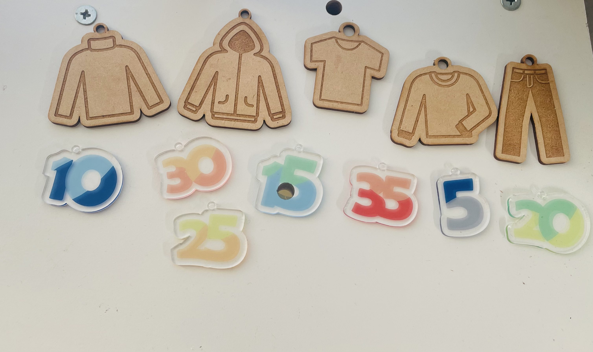

Design for others プロトタイピング
プロトタイピング
前回のページ
前回に思いついていた二つの案のうちの一つのクローゼットのような物を3Dプリンターで作成する案を簡易化してレーザーカッターとUVプリンターでパーツを作る物を考えた。
洋服セレクト
＜説明＞
洋服を選ぶ上で温度ごとに合う洋服をオシャレに見たいと思えるデザインの置物 ＜使用機材＞
3Dプリンター、レーザーカッター、UVプリンター ＜同じ班のホームページ＞
使用している所

感想、反省
実際に作ってみたものと作りたいとイメージしていたものがあまり上手くいかなかった。
特に、紐の部分の調整が難しかった。
アイデアとしては応用が効きそうなので、今後応用してより見やすいような形にしていきたい。